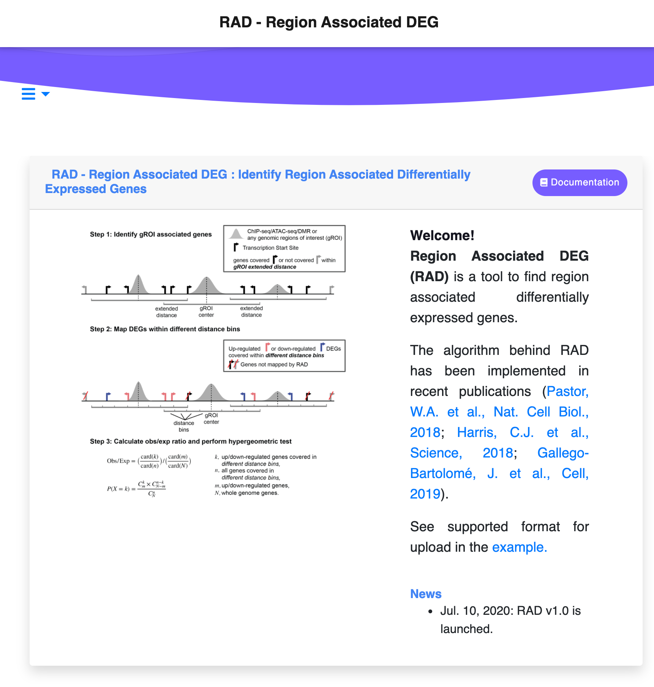
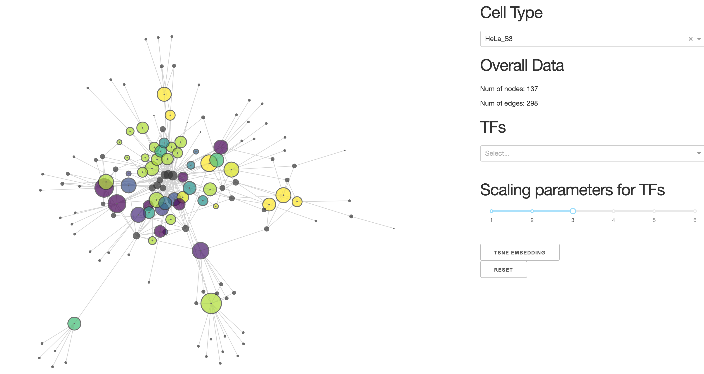

关于
我是浙江大学-爱丁堡大学联合研究所生物医学专业的四年级本科生。我目前在labW工作，由刘琬璐博士指导。我正致力于分析转录之间的相互作用 因子(TF)和转座因子(TE)使用多组学数据。
教育经历
2017 - 现在
本科, 浙江大学爱丁堡大学联合学院（浙江大学医学院）, 浙江大学
科研经历
奖项
2018 - 2019
浙江大学学业三等奖学金
浙江大学学业三等奖学金
成果
RAD-识别区域相关差异表达基因(DEGs)的网络应用
RAD是一个用户友好的网络工具，以确定Transcription start site (TSS) 近端和远端区域相关差异表达基因。RAD绘制与任何感兴趣的基因组区域(gROI)相关的上调和下调基因，并帮助研究者推断差异表达基因的距离对这些区域的调控功能。RAD包括结果的可视化和显著性的统计推断。

转录因子-转座组网络
转录因子-转座组网络是根据主要来自 ENCODE 数据构建的。我们关注转录因子与已知转座因子区域的结合，并分析其意义 的互动。我们的目标是预测转录因子和转座组之间的相互作用，以及它们在胚胎发生和癌症进展中的作用*本项目还在进行中

 粤ICP备20073081号
粤ICP备20073081号